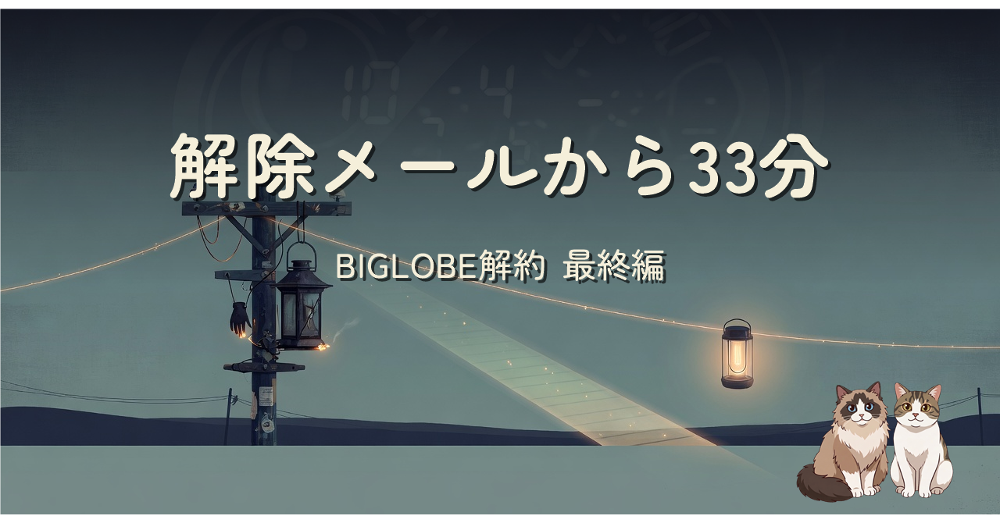
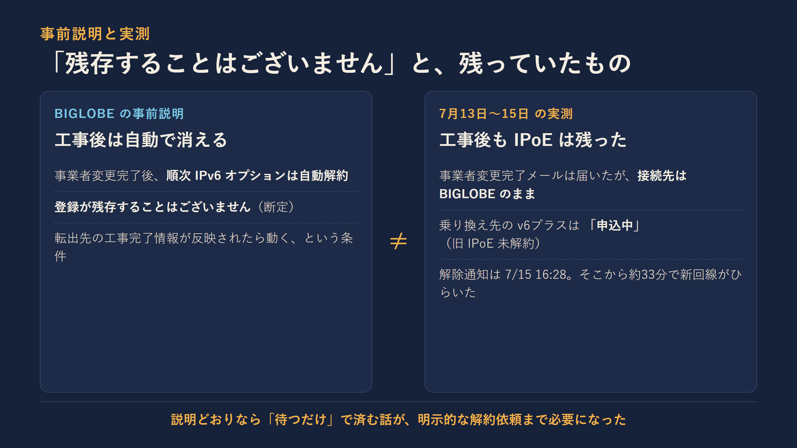
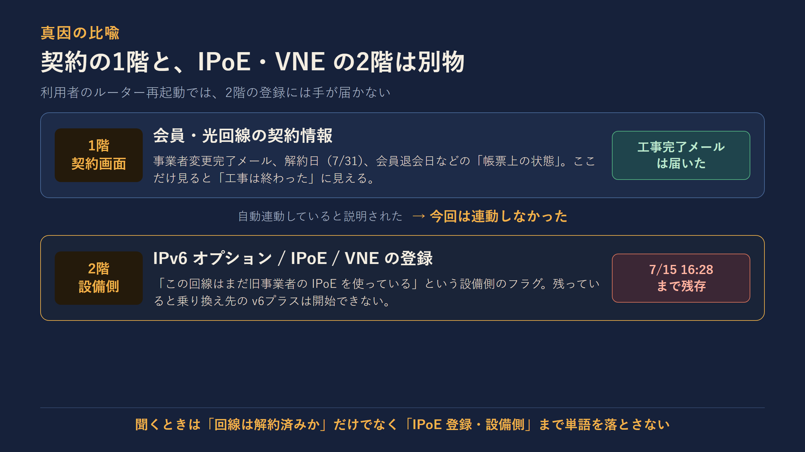
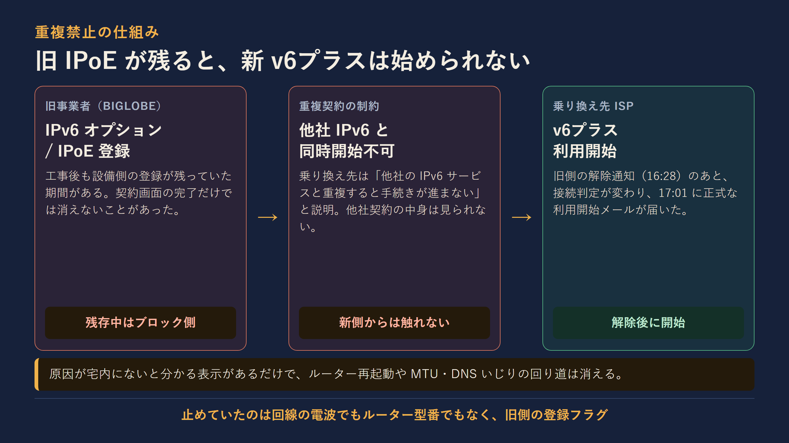
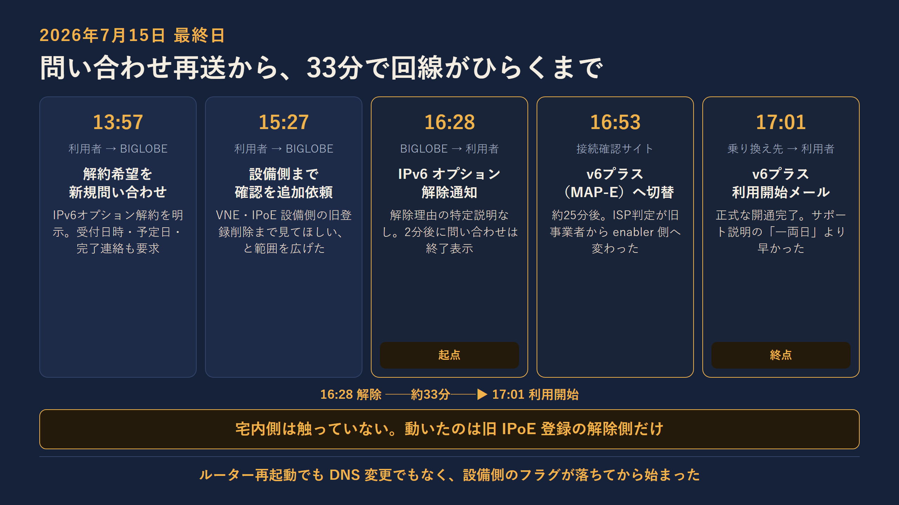
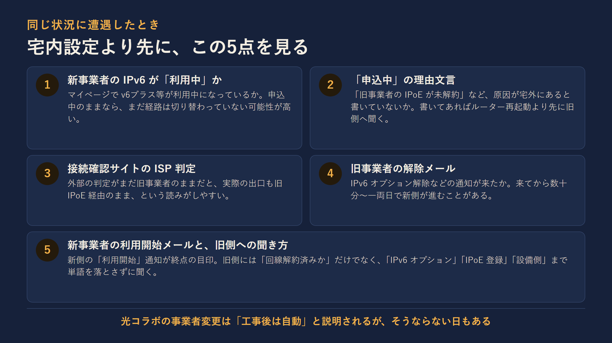

工事は完了、マイページは「利用開始」。それでも接続先は旧プロバイダーのままでした。旧IPoE登録が残っている間、乗り換え先のv6プラスは「申込中」から動きません。問い合わせをゼロから作り直し、VNE・IPoE設備側までの確認を依頼した日の午後4時28分、BIGLOBEから「IPv6オプション解除」のメールが届きました。25分後に接続判定が切り替わり、33分後に乗り換え先ISPから開通メールが届いた——シリーズ最終編の記録です。
この記事を NotebookLM でラジオ風に音声化したものです。移動中や作業しながらでもどうぞ。
光コラボの事業者変更は「工事が終わればあとは自動で切り替わる」と説明されることがあります。ただ、旧事業者側のIPoE・IPv6登録が残っていると、乗り換え先のv6プラスは始まりません。契約画面の1階と、IPoE・VNE設備側の2階は別物で、利用者のルーター再起動では2階に手が届かない——というのが今回の核心です。
最終的にBIGLOBEは解除してくれました。ただし、そこにたどり着くまでに必要だったのは、複数日にわたるチャット、消えた履歴の書き直し、明示的な解約意思の再表明、そしてVNE設備側まで指定した確認依頼でした。処理は完了し、説明はゼロ。同じ状況に遭った人が宅内機器を疑う前に見るべき5点を、図にして残しています。




